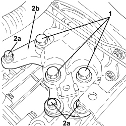
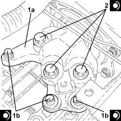
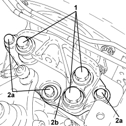

1008A42 POWER UNIT RIGID SUPPORT - GEARBOX SIDE - R.R.
- Path
- Procedures > 10 ENGINE > 1008 POWER UNIT SUPPORTS > 1008A POWER UNIT FASTENINGS > 1008A42 POWER UNIT RIGID SUPPORT - GEARBOX SIDE - R.R.
- Kind
- repair procedure (removal / refitting; the operation number is the code)
- Applies to
- engines: 1.9 JTS, 2.2 JTS, 3.2 JTS, 1.9 JTD 8V, 1.9 JTD 16V, 2.4 JTD 20V; all production periods
- Interactive page
- https://sloeber94.github.io/elrnDB/alfa/159/en/#/939010405
Applies to: engines: 1.9 JTS, 2.2 JTS; all production periods
 Removing
Removing
 Refitting
RefittingOp. 5530B52 BATTERY SUPPORT/DRIP TRAY - R.R
Op. 1008B30 GEARBOX SIDE SUPPORT FLEXIBLE MOUNTING(S) - REPLACE
Applies to: engines: 1.9 JTS, 2.2 JTS; all production periods
Refitting
RemovingOp. 1008B30 GEARBOX SIDE SUPPORT FLEXIBLE MOUNTING(S) - REPLACE
Applies to: engines: 1.9 JTD 8V, 1.9 JTD 16V; all production periods
Removing
RefittingOp. 5530B52 BATTERY SUPPORT/DRIP TRAY - R.R
- Position a hydraulic jack underneath the gearbox.
1. Undo the bolts fixing the gearbox side flexible mounting to the rigid support.
- Lower the power unit as necessary.
2. Undo the bolts (2a) and remove the power unit gearbox side rigid support (2b).

Applies to: engines: 1.9 JTD 8V, 1.9 JTD 16V; all production periods
Refitting
Removing1. Place the power unit gearbox side rigid support (1a) in its housing and secure it tightening the bolts (1b) to the recommended torque.
Component | Fastening | dia | Value (daNm) | Validity |
|---|---|---|---|---|
Gearbox side power unit rigid support | Bolt (to be replaced) | M12 | (gearbox side) 6.3 - 7.7 + 45° |
- Place the power unit back in its housing.
2. Tighten the new bolts fixing the gearbox side flexible mounting to the rigid support to the specified torque.
Component | Fastening | dia | Value (daNm) | Validity |
|---|---|---|---|---|
Gearbox side support flexible mounting | Bolt (to be replaced) | M12 | (support side) 6.3 - 7.7 + 45° |
- Remove the hydraulic jack from under the engine crankcase sump.

Applies to: engines: 1.9 JTD 8V, 1.9 JTD 16V; all production periods
Applies to: engines: 3.2 JTS; all production periods
- Refer to
Op. 1008B30 GEARBOX SIDE SUPPORT FLEXIBLE MOUNTING(S) - REPLACE
Applies to: engines: 2.4 JTD 20V; all production periods
Removing
RefittingOp. 5530B52 BATTERY SUPPORT/DRIP TRAY - R.R
- Position a hydraulic jack underneath the gearbox.
1. Undo the bolts fixing the gearbox side power unit flexible mounting to the rigid support.
- Lower the power unit as necessary.
2. Undo the bolts (2a) and remove the power unit gearbox side rigid support (2b).

Applies to: engines: 2.4 JTD 20V; all production periods
Refitting
RemovingPlace the power unit gearbox side rigid support in its housing and secure it tightening the bolts to the recommended torque.
Component | Fastening | dia | Value (daNm) | Validity |
|---|---|---|---|---|
Gearbox side power unit rigid support | Bolt (to be replaced) | M12 | (gearbox side) 6.3 - 7.7 + 45° |
- Place the power unit back in its housing.
- Tighten the new bolts fixing the gearbox side flexible mounting to the rigid support to the specified torque.
Component | Fastening | dia | Value (daNm) | Validity |
|---|---|---|---|---|
Gearbox side support flexible mounting | Bolt (to be replaced) | M12 | (support side) 6.3 - 7.7 + 45° |
- Remove the hydraulic jack from beneath the gearbox